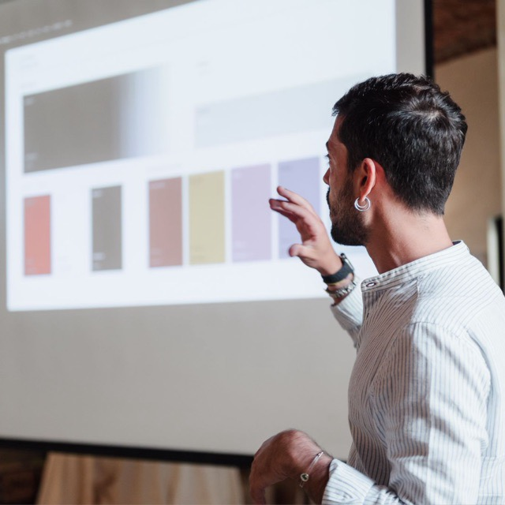

Il fatturato di una società tech, AI e calcolatrice alla mano.
Lavoro dentro le aziende B2B e metto marketing, vendite e RevOps sugli stessi numeri.
Se guidi una società tech, da founder o da CEO, parti dal conto sul tuo fatturato e dalle dieci domande che mostrano dove lo stai perdendo. Se invece investi in società tech, usale per leggere i tuoi investimenti.
Video: Subhashish Panigrahi, CC BY-SA 4.0, via Wikimedia Commons, senza audio
Quanti meeting servono per il fatturato che vuoi chiudere?
Prima di guardare, prova a stimarlo. Poi metti i tuoi numeri: il risultato cambia mentre scrivi.
I risultati si aprono con l'iscrizione
Lascia l'email una volta sola, ad A Tavola con Lorenzo, e si aprono tutti i conti di questa pagina, il foglio da stampare, il link con i tuoi numeri e i modelli. La newsletter è un pezzo al mese sui conti di un'azienda di cui parlano tutti. Nessuna offerta e nessuna chiamata commerciale.
Il modulo è di Substack, la piattaforma della newsletter: si carica solo se lo chiedi, e l'email la lasci a Substack, non a questo sito. Come sono trattati i dati.
Substack non dice a questa pagina se l'iscrizione è andata a buon fine, quindi te lo chiedo:
Come leggo un numero, mio o di altri: tre domande, in quest'ordine.
Chi lo dice
L'ho visto io in un dato aperto o in un documento depositato, o lo dichiara chi l'ha fatto? Il dichiarato pesa meno.
Contro cosa
Servono il periodo, il punto di partenza e il costo. Un "+52%" senza la base non dice niente.
Si rifà altrove?
Funzionerebbe in un'azienda B2B italiana da 5 a 50 persone, con il suo budget e il suo team?
Casi con un numero. Letti a fondo, con un voto su 10.
Ogni settimana un sistema raccoglie articoli da newsletter, blog e stampa di marketing e vendite. Io scelgo quelli che hanno un numero, li leggo a fondo e do un voto su 10. Il voto: fino a 3 punti per la prova, 3 per quanto si rifà in un'azienda B2B italiana da 5 a 50 persone, 2 per la novità, 2 per il canale.
Prima di vedere i voti: quale di questi tre esempi ha preso di più?
Sono i tre esempi con il voto più alto dall'8 novembre, quando il radar è partito. In due settimane il sistema ha raccolto 385 articoli e io ne ho tenuti 8. Il più solido è uno studio misurato da terzi; quasi tutti gli altri sono numeri dichiarati da chi l'ha fatto, e vanno letti così. Non ho ancora trovato un caso italiano con un numero.
Conti, repository ed esempi da prendere e adattare.
Quello che uso nel lavoro e si può aprire senza chiedermelo.
Officina
Dieci conti sul fatturato: funnel a ritroso, CAC, sconto contro volume, venditori da assumere, provvigioni. Sotto ogni risultato c'è la formula.
Apri l'OfficinaDa copiare
I repository di marketing e vendite che consulto, verificati su GitHub, più i miei calcolatori e le skill che uso ogni giorno.
Vai ai repositoryEsempi
Le campagne passate dal radar, ognuna con il suo numero, il tipo di prova e un voto su 10.
Vedi gli esempiPoche aziende alla volta. Abbastanza dentro da vedere i numeri veri.
Faccio il fractional CMO e RevOps: seguo go-to-market, marketing e brand di società tech B2B e B2B2B, dalla crescita del fatturato alla costruzione del team e al posizionamento. Lavoro per progetti di 6 o 12 mesi, che partono con l'obiettivo di raddoppiare o triplicare il fatturato.

Da dove vengo
Miseramente fallite due aziende tra il 2009 ed il 2012: una di marketing sportivo e una di food delivery.
AirHelp, startup di Y Combinator, a Berlino: business developer, poi growth per l'Europa, poi country manager per l'Italia.
Lunii, scale-up francese: il lancio in Italia, con oltre 300 uscite stampa nei primi dodici mesi.
Uno dei primi laboratori di LLM e bot in Europa, fino al 2021.
CMO di Ermes, un'azienda di cybersecurity, fino al 2024. In quegli anni l'azienda chiude un round da 7,5 milioni di euro.
Fractional CMO e RevOps, dentro poche aziende alla volta, tra Italia, Europa e Golfo.
La newsletter passa da 103 iscritti a inizio agosto a oltre 500 a novembre. Dall'8 novembre, ogni venerdì, il radar.
Un numero non ti torna? Scrivimi.
È il messaggio che leggo più volentieri. Se invece vuoi lavorare insieme, la pagina è Lavora con me.